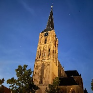

Bovenkerk

De Bovenkerk in Kampen is een ware schatkamer van historische en architectonische details die haar tot een bijzonder monument maken. Deze imposante kerk, die hoog boven de stad uittorent, is niet alleen een plaats van aanbidding maar ook een levend museum van middeleeuwse en renaissancistische kunst. Bezoekers worden hier ondergedompeld in een wereld van gebrandschilderde ramen, gotische gewelven en rijk gedecoreerde elementen die elk een uniek verhaal vertellen.
Het Hinsz-orgel, gebouwd in 1743, is een van de meest gerespecteerde historische orgels in Nederland. Het orgel heeft een imposante kast versierd met houtsnijwerk en gouden details. Het geluid van het orgel is warm en rijk, en het wordt nog steeds bespeeld tijdens concerten en kerkdiensten. Dit orgel is een muzikaal erfgoed dat de tand des tijds heeft doorstaan en nog steeds de harten van luisteraars raakt met zijn majestueuze klanken en esthetische schoonheid.